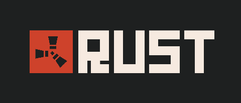

RustianLife est une plateforme communautaire complète autour d’un serveur du jeu Rust moddé : hébergement du serveur de jeu, site web avec dashboard joueur, bots Discord et automatisation des « wipes » (la remise à zéro régulière de la carte).
Conçu et développé à deux avec mon associé, le projet a été testé en charge puis lancé en juin 2026. Le serveur et le site sont actuellement en maintenance, en attendant une réouverture.
~100
joueurs au lancement
300+
membres Discord
7
conteneurs Docker
4
contrôles CI par PR
Serveur de jeu
Plugins Carbon (C#) : présence, file d’attente, signalements, Hardcore
API Fastify
Vérifie la clé d’API, valide les données, enregistre
PostgreSQL + Redis
Données via Prisma, file de tâches BullMQ
Effets
Rôles et messages Discord, commandes au serveur via Pelican
Les plugins du jeu ne touchent jamais la base de données directement : ils envoient leurs informations à l’API, qui est la seule source de vérité. Elle enregistre, puis déclenche les effets en arrière-plan (rôles Discord via une file d’attente, notifications, commandes envoyées au serveur de jeu), sans jamais bloquer la requête du plugin.
Le projet répond à trois besoins :